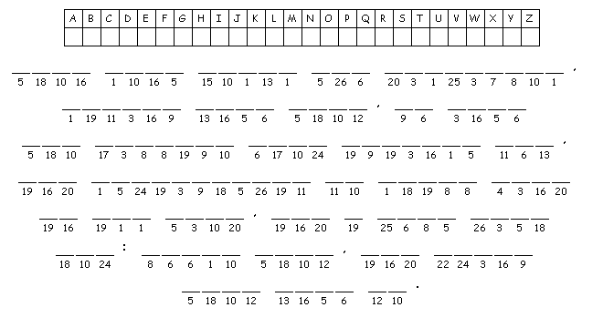
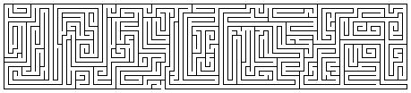

This
week's lessons: Matthew
21:1-11, Psalm
118:1-2, 19-29,
Isaiah
50:4-9a, Psalm
31:9-16, Philippians
2:5-11, Matthew
26:14-27:66 or
Matthew
27:11-54
Middle-School Pew-work
|
|
|
|
The procession of the Palms is an ancient “victory dance”. What “victories” do you celebrate in your life, and how do you celebrate them?_________________________________________________________________ _______________________________________________________________________________________ _______________________________________________________________________________________ _______________________________________________________________________________________ _______________________________________________________________________________________ _______________________________________________________________________________________ _______________________________________________________________________________________
Historically, a victory dance historically celebrated the return from battle of a victorious King.In what ways is Jesus like, and unlike, a victorious King of history? _____________________________________________ _______________________________________________________________________________________ _______________________________________________________________________________________ _______________________________________________________________________________________ _______________________________________________________________________________________ _______________________________________________________________________________________ _______________________________________________________________________________________ _______________________________________________________________________________________ _______________________________________________________________________________________ _______________________________________________________________________________________
A H E A D C G T D
|
  Created by Mazemaker at http://hereandabove.com/maze/mazeorig.form.html |
|
(Matthew 21:9) The crowds that went ahead of him
and that followed were shouting, "Hosanna to the Son of
David! Blessed is the one who comes in the name of the Lord!
Hosanna in the highest heaven!" (NRSV) |